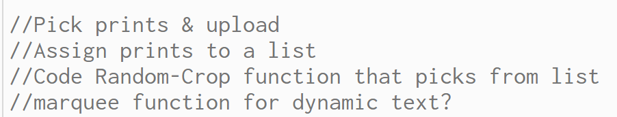

Home
Here is my week 9 documentation. I started finding existing artwork I'd like to use in my final project.
I've devided that I'd like to make a collage by coding a function that will randomly crop images that I'd
assign to a list. It may be easiest if I have five default frames, and have the function randomly assign an
image to a frame. Listed below are my comments for the function and the artists I will be
"remixing" artwork from.

Yoshitomo Nara
Lina Vonti
Janaina Tschape
Ning Lee